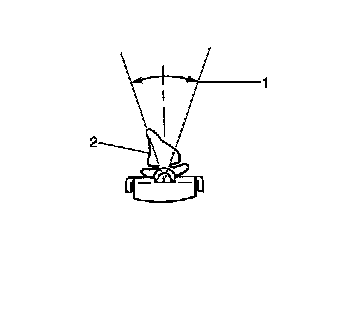

Wiper Blade Element Check
Wiper Blade Element Check

1. Remove the wiper blade from the wiper arm. Refer to Windshield Wiper Blade Replacement (Windshield Wiper Blade Replacement) .
2. Look down the entire length of the blade element.
3. The rubber part of the element (2) that contacts the window must be on the center line of the blade plus or minus 15 degrees (1).
4. Replace the element (2) if the element exceeds 15 degrees from the centerline of the blade, or if the element is cracked or torn. Refer to Wiper Blade Element Replacement (Wiper Blade Element Replacement)
5. Install the wiper blade onto the wiper arm. Refer to Windshield Wiper Blade Replacement (Windshield Wiper Blade Replacement) .